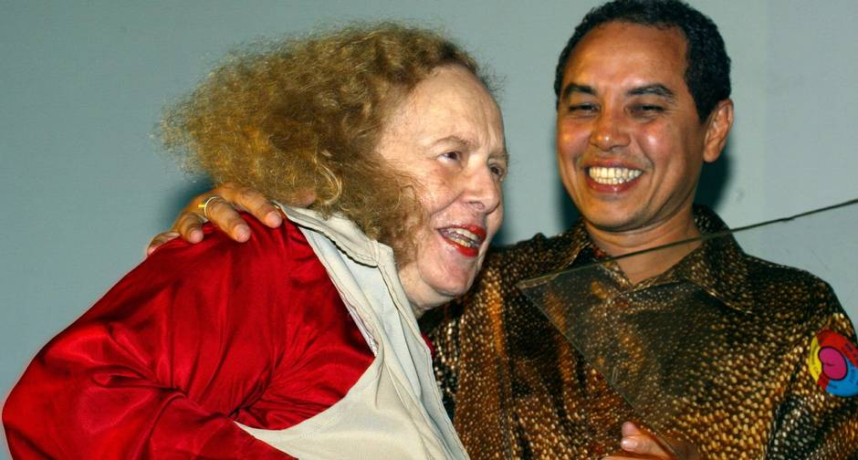

Rose Marie Muraro foi uma escritora,
intelectual e feminista brasileira.
Nasceu praticamente cega e sua personalidade
singular deu-lhe força e determinação suficientes
para tornar-se uma das mais brilhantes intelectuais
de nosso tempo.
“O homem vê a mulher como se estivesse num frigorífico:
um pedaço de nádegas, olhos grandes, cabelos pretos,
seios fartos. Ele enxerga a mulher aos pedaços.”
Sua história
Nascida em uma das famílias mais ricas do Brasil nos anos de 1930
e 1940, aos 15 anos, com a morte repentina do pai e consequentes
lutas pela herança, rejeitou sua origem e dedicou o resto da vida
à construção de um novo mundo, que ela descreveu como mais justo,
mais livre.
A Editora Vozes foi um capítulo à parte na vida de Rose. Lá,
trabalhou com Leonardo Boff durante dezessete anos e das mãos de
ambos nasceram os dois movimentos sociais mais importantes do
Brasil, no século 20: o movimento de emancipação das mulheres e
a teologia da libertação — até hoje, base da luta dos oprimidos.
Nos anos 80, presenciou a virada conservadora da Igreja.
E em 1986, Rose e Boff foram expulsos da Editora Vozes por ordem
do Vaticano. O motivo: a defesa da teologia da libertação,
no caso de Boff e a publicação, por Rose, do livro "Por uma erótica cristã".
Rose Marie Muraro foi eleita, por nove vezes, Mulher do Ano. Em 1990
e 1999 recebeu da revista Desfile o título de Mulher do Século,
e da União Brasileira de Escritores o de Intelectual do Ano, em 1994.
O trabalho de Rose, como editora, foi um marco na história da resistência ao regime militar,
e devido a este trabalho, recebeu do Senado Federal o Prêmio Teotônio Vilela,
em comemoração aos vinte anos da anistia no Brasil.

Rose Marie recebendo o prêmio Arco-Íris de Direitos Humanos.
A militante foi palestrante nas universidades de Harvard
e Cornell, entre tantas outras instituições de ensino
norte-americanas, num total de quarenta. Editou até o ano 2000
o selo Rosa dos Tempos, da Editora Record. Foi cidadã honorária
de Brasília (2001) e de São Paulo (2004) e ganhou o Prêmio
Bertha Lutz (2008). Pela Lei 11.261 de 30 de dezembro de 2005,
passada pelo Congresso Nacional, foi nomeada
Matrona do Feminismo Brasileiro.
Em meados da década de 1990, Muraro desafiou os próprios limites quando, aos 66 anos,
recuperou a visão com uma cirurgia e viu seu rosto pela primeira vez.
Rose Marie foi Símbolo de superação, pois mesmo sofrendo com vários problemas de saúde
continuou escrevendo.
Muraro morreu aos 83 anos de câncer na medula óssea, doença que a acometia há dez anos,
e teve seu corpo cremado no Cemitério do Caju. Ela teve complicações após um tratamento de
quimioterapia.
Além das suas obras, Rose Marie deixou também como herança cultural o Instituto Cultural Rose Marie Muraro (ICRM), que foi
criado em 2009 e que tem como objetivo de salvaguardar o acervo da intelectual, de mais
de quatro mil publicações.